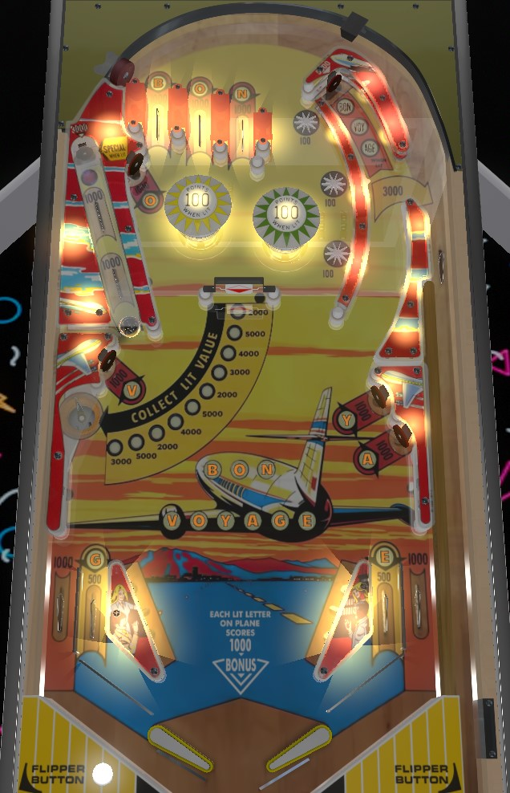

From the left flipper, shoot the far right dead-end lane. You'll score 5,000 points on the way up, plus 3 letters in Bon Voyage if lit; then, on the way down, the ball should deflect through the gate and back into the shooter lane for 3,000 more points. From the right flipper, shoot the captive ball as the go-to 5,000 point shot. Bon Voyage letters carry from ball to ball and are worth 1,000 points each in bonus; collect them all to light a special at the captive ball, which can be worth a free game, an extra ball, or an additional 5,000 points. Collecting the special unlights all Bon Voyage letters, though.
B-O-N are collectible at the top lanes. V is in the lower left; O is in the upper left, near the bumpers; Y and A are in the lower right; G and E are on the in lanes. In lanes score 500 points; any other switch corresponding to a letter scores 1,000 points. Roll over a lit letter to collect and unlight it. Collected letters score 1,000 points for end of ball bonus. Collected letters also carry over from ball to ball. Completing the phrase Bon Voyage lights the target at the end of the captive ball lane for a Special, which can be set to a free game, an extra ball, or 5,000 points. Collecting the Special unlights all Bon Voyage letters, which may not be a good thing to do in a competitive setting because it means your end of ball bonus gets reset. If the Special is set to extra ball, though, it may still be worthwhile to collect.
If the game is set to 3-ball play instead of the more standard 5-ball play, the first O and the Y will be tied together, so that collecting either one gives credit for both; the A and G will also be tied together in the same way.
The two switches in the captive ball lane each score 1,000 points, and the target at the end scores an additional 3,000. When Bon Voyage is completed, the target is lit for a Special as described above. In theory, this lane could be worth 7,000 points for a full captive ball hit- 2,000 for the rollovers on the way up, plus 3,000 for the target, plus another 2,000 for the rollovers on the way down- but in practice, only 5,000 points are available, because the game's score motor will still be counting the 3,000 from the target as the ball triggers the rollover switches, meaning the rollovers get ignored.
The target at the end of the dead-end lane on the far right scores 5,000 points. Occasionally, it will also be lit for Bon, Voy, or Age- this alternates with each 100-point switch hit, and most of the time, none of them will be lit. If one of the triplets of letters is lit, though, the game will spot all three of those letters in Bon Voyage for you when the target registers.
As the ball comes down the dead-end lane from the target, it will likely hit a small protrusion in the lane wall, which causes the ball to deflect through a gate on the right. This scores 3,000 points and puts the ball back into the shooter lane for a replunge.
The spinner always scores 100 points per spin. Each spin of the spinner cycles the value of the left saucer, as indicated by the arc of lights in the center of the playfield. The saucer value can be 2,000, 3,000, 4,000, or 5,000 points, and the progression is not linear. If the saucer value is currently high, it may be worth shooting for, but it is very possible for the flippers to be too strong to make a shot that reliably settles in the saucer given how close the saucer is to the bottom of the playfield.
Always score 100 points.
The game manual indicates that bumpers were not intended to be lit at the start of the game, and that hitting a wall switch just below the left saucer or just below the A target would be needed to light the corresponding bumper; however, in my experience, the bumpers always start lit.
Bon Voyage has a conventional in/out lane setup. In lanes score 500 points and award the G and E on the left and right respectively. Out lanes score 1,000 points. Slingshots score 10 points.
Bonus is equal to 1,000 points for each collected Bon Voyage letter. Collected letters stay lit from ball to ball. Collecting a Special at the captive ball unlights all Bon Voyage letters, which does reset the end of ball bonus back to 0 points. There is no bonus multiplier or mid-ball bonus collect of any kind.